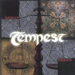

Home Artist links Label link

Tempest - Balance
| Artist: | Tempest |
| Title: | Balance |
| Label: | Magna Carta MAX-9053-2 |
| Length(s): | 51 minutes |
| Year(s) of release: | 2001 |
| Month of review: | [04/2001] |
Line up
Todd Evans - guitars, harmony vocals
William Maxwell - bass, pedals, keyboards
Jim "hurricane" Hurley - fiddle
Adolfo Lazo - drums
Lief Sorbye - vocals, mandolins, harmonica, bodhran
with
Robert Berry - b-3 hammond organ, synthesizer, harmonmy vocals
Tracks
| 2) | Dancing Girl | 3.50
|
| 3) | Dance Of The Sand Witches | 4.19
|
| 4) | Iron Lady | 4.39
|
| 5) | Two Sisters | 5.26
|
| 6) | Wicked Spring | 3.49
|
| 7) | Old Man Flint | 3.28
|
| 8) | Villemann | 4.35
|
| 9) | Battle Mountain Breakdown | 2.53
|
| 11) | Between Us | 4.22
|
Summary
Compared to Gravel Walk and the 10th Anniversary Compilation, quite a bit of line-up
changes. Maybe that is why it took them rather long to return with a new studio record.
The music
The album opens loudly with plodding folkrock and an organ in the back. Typical folkrock
I guess with the folky vocals of Sorby. Dancing Girl is a bit too simple for me, but
the instrumental Dance Of The Sand Witches (and you can add your own pun there). Very
technical and fast and delivered with verve we hear some Arabic melodies and the electric
guitar also gets to play it notes. Think of dervishes here.
The tenseness of the previous track lingers in Iron Lady, but this track is much slower.
Quite nice. Back to playfulness in Two Sisters. A bit bluesy, but also tame. Wicked Spring
does not bring much new.
Organ and drum rolls feature on the melodic instrumental Old Man Flint where the pace goes
up continuously. Melodious and Norwegian is the traditional Villeman. A nice variation
because of those lyrics.
Battle Mountain Breakdown is Tempest at its most furious on this album, but The Journeyman
is tame folk again. A bit like the folk equivalent of A Horse With No Name.
Between Us is a a somewhat Greek sounding ballad. Nice, but the closer Royal Oak is
much better. A strong instrumental finale.
Conclusion
It is telling that the instrumental tracks are the most likable and interesting to me.
Here the band shows its prowess and the self similar typical folk vocals are not
present. The instrumentals are really quite good, but being in the minority...
© Jurriaan Hage